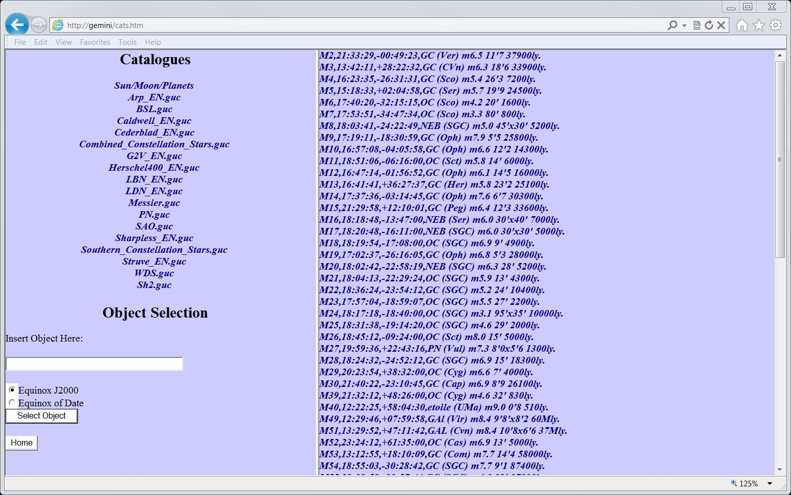
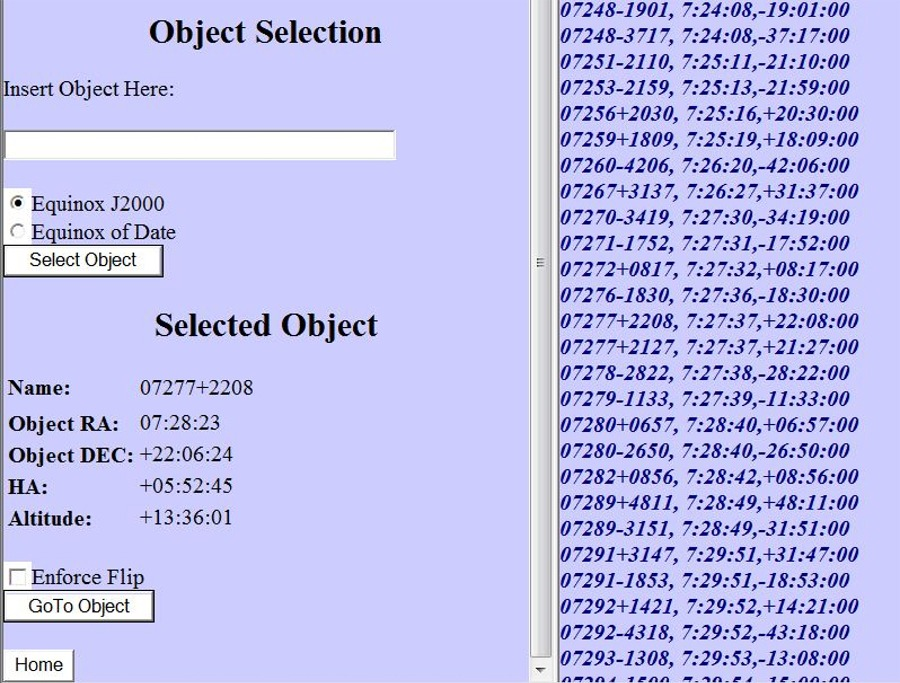

| This page lets you select any of the Stars/objects in
the extensive list of catalogs, and then slew to them. Please note: Only targets above the horizonal will be shown. |
|  |
| Select that catalog from the list on the Left, and
then click on the desired object from the list on the right.
If you then hit select object from the menu box Select Object, the mount
will then present you with a Select Object menu (see below) and a
GO TO object button. |
 |
| There is also a Enforce Flip checkbox. If you
select this, the mount will try to do a Meridian Flip to reach the
object, but only if it is safe to do one. The Home button is for going to the main menu |
| You can add your own catalogs into this selection of catalogs if you wish.
Mr. Didier Garriou web site as a great selection of catalogs that he
has built or modified, and also the instructions on how to add them to
the Gemini-2, this site is in both French and English. His
instructions tell you how to put them into the hand controller. If you want to put then into the main unit follow these instructions:
|
| If your Gemini-2 is connected Via Ethernet, turned ON, and Responds to http://gemini then this link will open this page in the Gemini-2 web interface, after prompting for a log-in. |